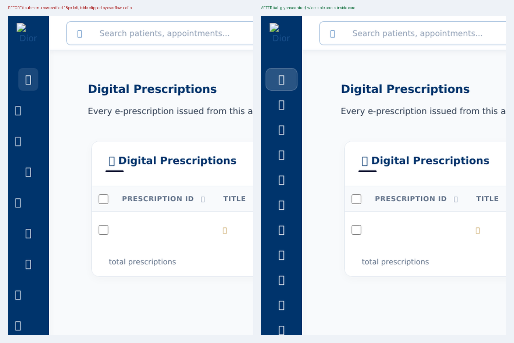
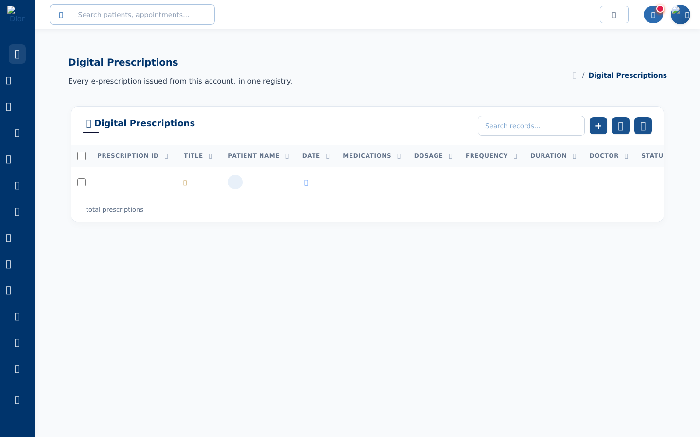
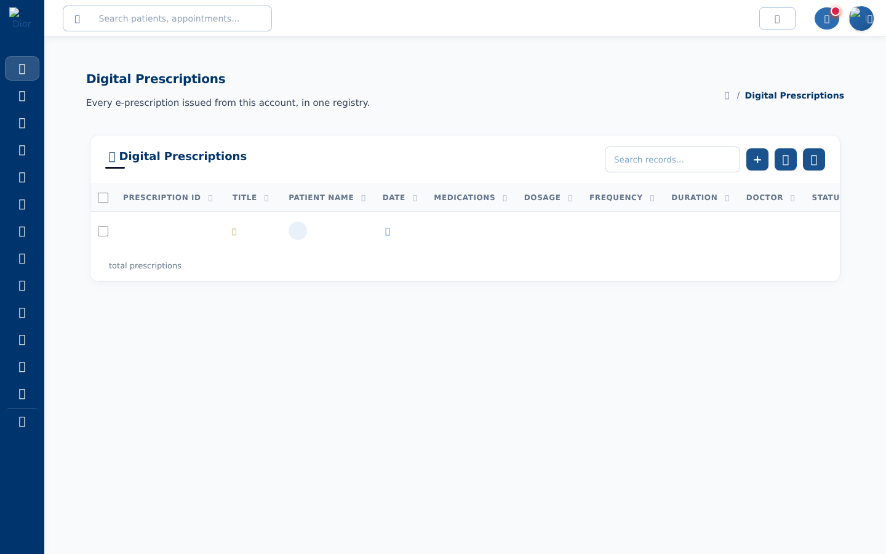
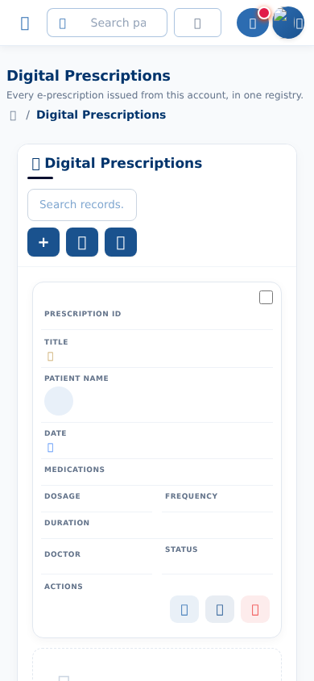

Doctor Dashboard — collapsed sidebar fix
Screenshot me jo 72px collapsed rail tha, uske teen concrete bugs fix kiye gaye hain.
Sirf assets/css/dior-custom.css badla hai — koi PHP/JS change nahi.
1. Before / after

Left = pehle, right = ab. Browser me 1440px desktop, collapsed state, Digital Prescriptions tab.
2. Kya galat tha, kyun galat tha
| Bug | Root cause | Fix |
|---|---|---|
| Icon shift Appointments / Patients / Accounts / Consultations / Pharmacy / Documents / Telemedicine — in 7 rows ka icon 72px rail ke centre se ~18px baayein chipka hua tha. Baaki rows theek the. |
Jin buttons ka submenu hai unke andar ek teesra child hai —
<i class="fas fa-minus submenu-icon">. Aapki collapsed CSS me
.nav-label aur .grp-title hide the par .submenu-icon
ki width 0 set karne wali rule
.dior-side-nav .dior-nav-btn i { width: 24px } se haar gayi. Chevron
invisible tha par 24px + 12px gap jagah kha raha tha, isliye
justify-content:center ke bawajood icon left me chala gaya. |
Collapsed mode me .submenu-icon ko display:none + zero
width/margin/flex-basis. Saath hi .grp ko fixed 56px inner width di,
buttons ko gap:0, aur visible icon ko margin: 0 auto — ab har glyph
rail ke exact centre (x=36) par hai. |
| Table cut Digital Prescriptions / Appointments jaise wide registries ka right side (Status, Actions) screen se bahar kat raha tha. |
.dior-doctor-wrap .dior-main-content { overflow-x: clip } — clip me scrollbar
nahi banta, isliye overflow hone par content silently kaat diya jaata tha. Table ka
natural width ~1396px hai, wrapper sirf ~1218px. |
Wrapper (.pr-table-wrapper, .va-table-wrapper) me
overflow-x: auto + patla custom scrollbar. Page par sideways scroll nahi aata,
table apne card ke andar scroll hoti hai. |
| Active row Selected menu item solid white block tha — us par white icon almost invisible. |
Base rule .dior-side-nav .dior-nav-btn.active { background:#FFFFFF } collapsed rail
me bhi lagu tha. |
Collapsed mode me translucent white pill
(rgba(255,255,255,.16) + hairline ring) aur white icon
#FFFFFF force kiya; hover bhi wahi treatment. |
3. Measured result (Chromium, collapsed state)
| Check | Before | After |
|---|---|---|
| Icon centre in rail | 17.5px / 35.5px (mixed) | 36px on all 13 rows |
| Chevron reserved space | 24px + 12px gap | 0px |
| Table wrapper overflow | clip (no scroll) |
auto (scrollable) |
| Table right edge vs card right edge (1440px) | 1543px vs 1365px — 178px clipped | 1543px vs 1365px — scroll ke andar reachable |
| Page horizontal scroll | none | none |
| Sidebar width / content offset (1025 → 1920px) | 72px / 72px (correct) | 72px / 72px (unchanged) |
| Mobile (<1025px) drawer | offscreen, translate -100% | unchanged — koi regression nahi |
4. Screenshots
Before — 1440px collapsed

After — 1440px collapsed

Submenu flyout (hover) still works

390px phone — drawer still off-canvas

5. FTP par kya upload karna hai
- Sirf 1 file:
wp-content/plugins/dior-medical/assets/css/dior-custom.css - File ke end me naya block hai:
DOCTOR DASHBOARD — COLLAPSED SIDEBAR POLISH (TASK 2)— poora block ek saath append hota hai, kisi purane rule ko chheda nahi gaya. - Ye block sirf
@media (min-width: 1025px)ke andar hai, isliye mobile drawer par koi asar nahi. - CSS
filemtime()se version hoti hai, to upload ke baad browser cache apne aap bust ho jaayega — bas hard refresh (Ctrl/Cmd + Shift + R) kar lena. - PHP templates ya JS me koi change nahi hai, isliye wo files dobara upload karne ki zarurat nahi.
6. Verify kaise karein
- Desktop (1025px se bada) par sidebar collapse karein — har icon rail ke beech me hona chahiye.
- Submenu waale items (Appointments, Patients, Accounts, Consultations, Pharmacy, Documents, Telemedicine) par hover karein — flyout menu pehle jaisa 64px par khulega.
- Digital Prescriptions / View Appointment kholen — table ke neeche patla horizontal scrollbar dikhega, Status aur Actions tak scroll ho jaayega. Page khud sideways scroll nahi hoga.
- Phone width par sidebar collapse button chhupa hua hai aur drawer pehle jaisa slide hota hai.